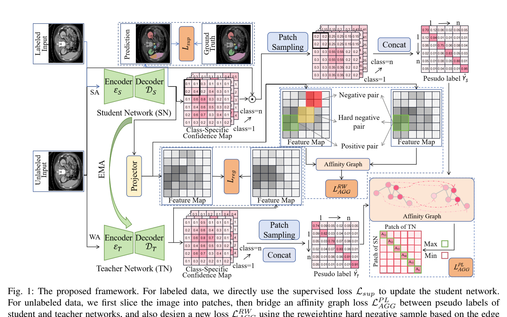
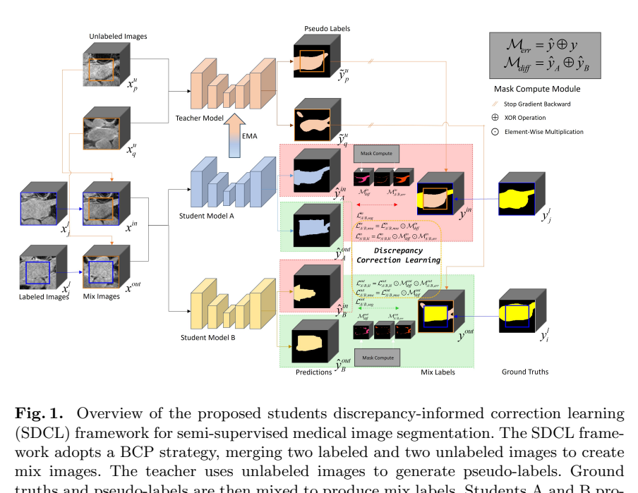
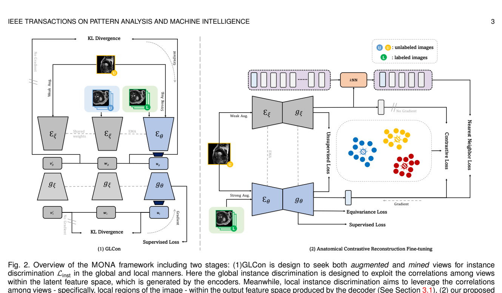

原论文流程图 · Figure 1 · PDF 第 3 页

Fig. 1: The proposed framework. For labeled data, we directly use the supervised loss L to update the student network. sup For unlabeled data, we first slice the image into patches, then bridge an affinity graph loss LPL between pseudo labels of AGG 原文来源
论文针对医学图像分割中像素级标注昂贵、标注量极少的问题，试图结合半监督学习（SemiSL）与对比学习（CL）。作者指出既有方法有两个明显不足：其一，依赖pretext任务，存在采样偏差、类冲突和跨数据集域偏移，泛化性差；其二，标注过少导致监督信号不足，常用的回归、逐像素交叉熵或均方误差损失无法强制类内紧凑和类间可分，容易过拟合 [p. 1]。作者认为，SemiSL的有效性依赖流形假设和聚类假设，标注极少时聚类边界模糊，难以刻画流形形状；引入语义图可以把数据点表示为节点、特征相似性表示为边，从而显式编码数据内在结构，帮助标签传播 [p. 1–2]。
整体是教师-学生框架，混合使用有标注集 $D_L$ 和无标注集 $D_U$（$N_L \ll N_U$），学生网络由监督损失和若干无监督/半监督损失共同更新，教师网络提供伪标签 [p. 2–3]。图1（第3页）给出框架：有标注数据直接用 $L_{sup}$ 更新学生；无标注数据先切块，再在师生伪标签之间建立亲和图损失 $L_{PL}^{AGG}$，并基于亲和图边设计重加权难负样本损失 $L_{RW}^{AGG}$；蓝色箭头为有标注数据，黑色箭头为无标注数据，SA表示强增强、WA表示弱增强 [p. 3]。
（1）块级类中心采样。 对第 $i$ 张图、类别 $k$，用类别置信图 $C_k^i$ 与原图逐元素相乘得到 $X'^i_k = X_i \odot C_k^i$，再对每个块 $P_{i,j}^k$ 计算平均块熵：
$$Ent_{i,j}^k = -\frac{1}{|P_{i,j}^k|}\sum_{m\in P_{i,j}^k}\left[X'^i_k(m)\log X'^i_k(m) + (1-X'^i_k(m))\log(1-X'^i_k(m))\right]$$
对锚块类别 $k$，取熵值Top-n的块为正样本，其余为负样本。作者称高熵表示该块可能含类别 $k$ 目标但与其他类混淆，因此熵比随机选择更有信息量，可避免类冲突 [p. 3–4]。
（2）伪标签间的亲和图对比损失。 构造块级亲和图 $A\in\mathbb{R}^{N\times N}$，边权用高斯核：
$$A_{ij}=\exp\left(-\frac{|\hat y_i^t-\hat y_j^s|_2^2}{2\sigma^2}\right)$$
其中 $\hat y^t$、$\hat y^s$ 分别为教师、学生伪标签，$\sigma$ 为自适应带宽。损失为
$$L_{PL}^{AGG}=\sum_{i=1}^{N}\exp\left(-\frac{|\hat y_i^t-\hat y_i^s|2^2}{2\sigma^2}\right)+\gamma|A|*$$
第一项最大化对角元（师生自相似），第二项用核范数作为秩函数的凸松弛，通过奇异值阈值化抑制噪声维度，防止过拟合 [p. 4]。Listing 1（第5页）给出式3的PyTorch实现，但代码中把 $\gamma$ 用作高斯核带宽，与正文式3中 $\gamma$ 平衡核范数的角色不一致，属于文本与代码的符号冲突。
（3）亲和图引导的难负样本重加权。 用式4的InfoNCE式损失，查询 $q$、正键 $k^+$、负样本库 $Q$，温度 $\tau$。作者用动态阈值 $\theta\in(0,1)$ 依据对角元 $A_{ii}$ 识别难负样本，并按式6混合两个负特征：
$$h_k=\frac{A_{ii}n_i+(1-A_{ii})n_j}{|A_{ii}n_i+(1-A_{ii})n_j|_2}$$
最终损失为式7，把式4分母中的负样本替换为混合难负样本集合 $H$ [p. 5]。总损失为 $L_{all}=L_{sup}+L_{reg}+L_{PL}^{AGG}+L_{RW}^{AGG}$，其中 $L_{reg}$ 是师生输出间的交叉熵 [p. 5]。
作者声称的贡献有三点：提出Semi-AGCL框架，缓解对pretext的依赖和过拟合；用亲和图作为伪标签的外部约束，配合亲和质量损失增强类判别特征，无需显式pretext训练，并跨多个域验证；采用熵驱动的块级对比学习选择正负样本，避免类冲突 [p. 2]。我的解读是：核心新颖点在于把“师生伪标签一致性”编码为亲和图，并同时用于对比损失和难负样本重加权；但“无pretext”更多指不额外预训练，框架本身仍依赖教师-学生伪标签机制，这与标准SemiSL并无本质断裂。
数据集与划分。 LA为100例3D钆增强MRI左心房扫描；ACDC为100例患者心脏MRI，四类（背景、右心室、左心室、心肌）；CRAG为213张H&E结直肠腺癌全切片图像，20×物镜、0.55 µm/pixel，带实例级标注 [p. 6]。LA和ACDC按80%/20%训练/验证；CRAG按80%/10%/10%训练/验证/测试 [p. 6]。指标为DSC、Jaccard、HD95、ASD [p. 6]。
训练设置。 DGX A100服务器，固定随机种子，Adam优化器，batch size 16，学习率1e-4；$\tau=0.2$、$\lambda=4$（文中写“Equation 5”，但式5是梯度公式，疑为笔误），式3中 $\gamma=-1$；Top-n参数在验证集上确定为0.999、0.25、0.2、20 [p. 6]。ACDC使用2D U-Net，输入块256×256，掩码零值区域170×170，batch size 24，预训练10k迭代、自训练30k迭代 [p. 7]。
主要结果。 LA（表I，第6页）：5%标注下Semi-AGCL的DSC 88.92、Jaccard 78.84、HD95 1.90、ASD 0.66；10%标注下DSC 90.33、Jaccard 82.53、HD95 6.68、ASD 1.78。作者称5%时相对第二名在DSC、Jaccard、HD95、ASD上分别提升3.11%、2.90%、2.19、0.20 [p. 6–7]。但表I排版严重错乱，部分基线数值与行标签难以可靠对应，例如SASSNet在5%行的DSC显示为81.60而10%行为84.50，需以原表为准。
ACDC（表II，第6页）：5%标注下DSC 88.92、Jaccard 78.84、HD95 1.90、ASD 0.66；10%标注下DSC 90.33、Jaccard 82.53、HD95 6.68、ASD 1.78。作者称5%时DSC提升最高达23.09%，并指出10%时HD95和ASD反而比5%差，可能因为亲和图损失需要更多迭代来学习复杂边细节 [p. 7]。
CRAG（表III，第7页）：5%标注下DSC 84.42、Jaccard 70.49、HD95 1.48、ASD 2.88；10%标注下DSC 91.93、Jaccard 83.37、HD95 1.08、ASD 1.76。作者称10%时已优于100%标注的U-Net（DSC 91.10），并归因于2D切片组合更多、组织病理纹理特征丰富 [p. 7]。摘要中“5%时在CRAG和ACDC上提升26.57%”在正文表III/表II中未直接给出对应计算，无法核实。
消融。 表IV（第8页）比较不同亲和图损失设置，作者称GK+L与GK+L1差异不大，但加入 $\lambda|A|_$ 后指标提升，且5%标注下提升比10%更明显 [p. 8]。表V（第8页）比较余弦相似度、类置信度和熵采样，作者称熵采样大幅优于前两者 [p. 8]。表VI（第8页）报告LA上参数量与训练时间：Semi-AGCL约9.44M参数、48.6分钟；去掉块级类中心采样（w/cls conf）为46.8分钟，作者称仅差1.8分钟 [p. 7–8]。但表IV、V、VI在提供的文本中排版混乱，具体数值无法可靠辨认，只能依据作者文字描述。
支持的结论：在三个不同模态数据集上，Semi-AGCL在5%和10%标注下多数指标优于所列基线，尤其CRAG和ACDC的5%场景提升明显；消融文字支持亲和图损失和熵采样各自有贡献。局限与缺失证据：表I、IV、V、VI排版错乱，多个数字无法与条件一一对应；$\gamma$ 在正文与Listing 1中含义冲突；式3中 $\gamma=-1$ 与“平衡相对重要性”的常规解释不符；未报告多次运行的均值/方差或显著性检验；未说明教师网络更新方式（如EMA动量）；“26.57%”提升在正文中缺少可核对的计算；ACDC 10%时HD95/ASD变差的解释仅为推测。
已报告：Adam、batch size 16、学习率1e-4、$\tau=0.2$、$\lambda=4$、$\gamma=-1$、Top-n为0.999/0.25/0.2/20、ACDC的2D U-Net与256×256输入、170×170掩码零值区、batch size 24、10k预训练+30k自训练、数据划分比例、评价指标。未报告或无法辨认：教师更新策略与动量系数、数据增强的具体组合、块大小与块数 $N$、内存库大小 $K$、动态阈值 $\theta$ 的取值、$\sigma$ 的自适应计算方式、优化器权重衰减、训练总轮数（LA/CRAG）、随机种子具体值、基线复现的完整配置。复现时应优先核对原PDF中的表I、IV、V、VI，并澄清 $\gamma$ 与 $\lambda$ 的符号定义。
本篇未找到可可靠提取的方法流程图，请查看原文 PDF。
作者关注半监督医学图像分割中的边界/局部区域精度：现有伪标签与一致性正则方法主要优化整体语义，边界处（如右心室腔与背景之间）仍存在明显分类错误，而医学诊断依赖器官边缘与形状的精确刻画 [p. 1][p. 2]。作者将 2D 边界推广为 3D 表面，并统称为“流形（manifold）”，提出在 U-Net 解码器中加入流形监督分支，以额外监督信号强化局部特征建模 [p. 2]。作者主张该分支只在训练期使用，测试期可移除，因此相对基线不增加推理参数或计算量 [p. 2][p. 4]。
网络由编码器、双分支解码器（基分支 D_ba 与流形分支 D_mf）、伪标签生成网络和流形生成器组成（图 2，[p. 3]）。标注与未标注数据先按 batch 维拼接，一起送入编码器；解码后两分支输出再按 batch 拆分，分别计算标注/未标注损失 [p. 3][p. 4]。基分支沿用基线解码器与分割头 H_seg（输出 K 类）；流形分支为 U-Net 式结构，流形头 H_mf 输出 2 通道，表示每个像素/体素是否属于流形 [p. 4]。推理时只保留编码器与基分支 [p. 4]。
对标注数据，流形监督为 M^l = M(Y^l)；对未标注数据为 M^U = M(Y_p^pseudo)，其中 Y 为分割监督图（标注真值或伪标签）[p. 4]。流形图与分割图空间尺寸相同但只有 2 通道 [p. 4]。
MA-Sobel：2D 时把 one-hot 分割图转为离散表示，用 3×3 Sobel 核计算 Gx、Gy，梯度幅值 G = sqrt(Gx²+Gy²)，得到 M = Sobel(Y)（式 1–3）[p. 5]。3D 时使用三个 3×3×3 核（式 4），按同样原理计算三轴梯度 [p. 5]。
MA-Canny：先用高斯滤波平滑分割图（式 5，σ 控制平滑程度），再对平滑图做 Sobel 梯度（式 6），最后用双阈值 T_low、T_high 将像素分为强边缘、弱边缘和非边缘 [p. 6]。实验设置为 σ=1，T_low=0.1，T_high=0.2 [p. 7]。
基分支损失为 Dice 损失：L_base = DICE(Ŷ^l, Y^l) + DICE(Ŷ^p, Y_p^pseudo)（式 7）[p. 6]。流形分支视为二分类，使用交叉熵：L_mf = CE(M̂^l, M^l) + CE(M̂^p, M_p^pseudo) [p. 7]。总损失 L_total = (1−α)·L_base + α·L_mf，α 平衡两分支贡献 [p. 7]。
作者声称的贡献包括：提出利用流形信息提供额外监督的 MANet 模块；提出 MA-Sobel（2D/3D 通用）与 MA-Canny（2D 专用）两种变体；流形分支可无缝集成到 U-Net 类半监督基线；推理阶段可移除该分支而不增加测试成本 [p. 2]。我的解读是：核心新颖点在于“从分割监督图自动生成边界/表面监督并作为辅助解码分支”，而非新的半监督范式；其效果依赖伪标签质量与流形算子选择，作者也承认这一点 [p. 9]。
评价指标为 Dice、Jaccard、95HD、ASD [p. 7]。所有实验在 NVIDIA A100 上进行；以 BCP、MCF、CAML 等为基线，并严格沿用各基线原始设置，仅增加流形分支 [p. 7]。
ACDC（表 I，[p. 5]）：以 BCP 为基线，5% 标注时 MA-Canny 取得 Dice 88.76%、Jaccard 80.28%、95HD 2.28、ASD 0.63；MA-Sobel 为 88.68%/80.22%/2.34/0.76。10% 标注时 MA-Canny 为 89.96%/82.25%/1.60/0.54，MA-Sobel 为 89.82%/82.10%/3.24/0.87。作者指出 MA-Canny 在 10% 设置下较 MA-Sobel 降低 95HD 1.64、ASD 0.33，认为 Canny 更适合 2D 精细边界 [p. 7]。
LA（表 II，[p. 6]）：5% 标注时 MA-Sobel 为 Dice 88.03%、Jaccard 78.80%、95HD 8.51、ASD 2.32；10% 标注时为 90.28%/82.37%/6.49/1.66。作者强调 10% 时 Dice 90.28% 已接近全监督 V-Net 的 91.47% [p. 7][p. 8]。
Pancreas-NIH（表 III，[p. 7]）：20% 标注下 MA-Sobel 为 Dice 82.75%、Jaccard 70.90%、95HD 11.15、ASD 3.64，作者称在 Dice/Jaccard 上优于所有对比方法 [p. 8]。
表 IV（[p. 8]）显示将 MANet 结构用于 BCP、CAML、MCF 等不同基线时均带来提升；例如 CAML 上 Dice 从 89.94% 提升至 90.28%（+0.34），MCF 上从 89.79% 提升至 90.64%（+0.85），但表中具体行列对应关系在文本中较难逐项核对，需以原表为准 [p. 8]。
图 3（[p. 9]）以 BCP 为基线，在 LA 与 ACDC 10% 标注下展示：基线存在缺失突出部分、边界凹陷或误分类像素，MANet 结果边界更完整。作者据此认为流形监督有助于局部特征建模 [p. 8][p. 9]。
支持的结论：在作者报告的设置下，MANet 在 ACDC、LA、Pancreas-NIH 上多数指标优于所列基线；MA-Canny 在 2D ACDC 的边界指标上优于 MA-Sobel；推理期移除流形分支确实不增加测试参数/计算量（结构上成立）[p. 4][p. 5][p. 6][p. 7]。
局限与缺失证据：作者自述方法依赖伪标签质量，且训练阶段计算复杂度增加；未来可将流形操作融入伪标签生成以提升伪标签质量 [p. 9]。论文未报告训练时间/显存开销的定量数据；未给出流形分支单独消融（如去掉流形损失仅保留分支）的对照；表 IV 的具体数值与行列对应在文本中不够清晰；Canny 阈值与 σ 仅给出单一设置，未做敏感性分析 [p. 7][p. 8]。此外，ACDC 10% 设置下 MA-Sobel 的 95HD（3.24）反而高于 5% 设置（2.34），作者未解释该现象 [p. 5]。
原论文流程图 · Figure 1 · PDF 第 3 页

Fig.1. Overview of the proposed students discrepancy-informed correction learning (SDCL)frameworkforsemi-supervisedmedicalimagesegmentation.TheSDCLframe- workadoptsaBCPstrategy,mergingtwolabeledandtwounlabeledimagestocreate mix images. The teacher uses unlabeled images to generate pseudo-labels. Ground 原文来源
半监督医学图像分割（SSMIS）旨在利用少量标注与大量未标注数据。作者指出，主流 teacher-student 方法（如 Mean Teacher、UA-MT、CoraNet、BCP）依赖一致性正则与伪标签，但单一模型结构不可避免地产生噪声或错误伪标签，导致确认偏差与认知偏差；模型很难自行纠正这些偏差 [p. 2]。多学生方法可提供多样性，但缺少 EMA teacher 时训练不稳定；多教师方法受限于单一学生结构，纠正能力有限；已有纠正学习（如 MCF 的 inter-subnet 交互）仍缺少稳定利用多样信息自我纠偏的通用方案 [p. 2]。因此作者提出 SDCL：一个 EMA teacher 加两个结构不同的可训练学生，把学生间分割差异视为潜在偏差区域，并在这些区域做“复习正确认知、修正错误偏差”的纠正学习 [p. 2–3]。
SDCL 分两阶段：先用标注数据做 Copy-Paste 增强的预训练；再进入半监督阶段，用预训练模型初始化两个学生与 teacher [p. 4]。半监督阶段包含三部分：基于 BCP 策略的基础分割损失；由两学生分割差异得到 DiffMask；由学生预测与 mix label 的差异得到 ErrMask，再与 DiffMask 相乘得到 DiffErrMask，用于偏差纠正 [p. 4]。3D 任务中学生 A 为 VNet、学生 B 为 ResVNet；2D 任务中 A 为 UNet、B 为 ResUNet。teacher 由学生 A 经 EMA 更新，作者称两学生性能差距很小 [p. 4]。框架见 Fig. 1 [p. 3]。
生成零中心掩码 M∈(0,1)^{W×H×D}，0 表示前景、1 表示背景，0 区域大小为 βW×βH×βD，β∈(0,1)。混合图像为：
x_in = x_lj ⊙ M + x_up ⊙ (1−M)，x_out = x_uq ⊙ M + x_li ⊙ (1−M)（式1）。
未标注图像 x_up、x_uq 送入 teacher 得到伪标签 p_up、p_uq；取最大连通分量得到优化伪标签 ỹ_up、ỹ_uq。混合标签为：
y_in = y_lj ⊙ M + ỹ_up ⊙ (1−M)，y_out = ỹ_uq ⊙ M + y_li ⊙ (1−M)（式2），其中 i≠j、p≠q，⊙ 为逐元素乘 [p. 4]。
两个学生分别处理 x_in、x_out 得到 ŷ_in、ŷ_out。BCP 分割损失为：
L_in^{A/B,seg} = L_seg(ŷ_in, y_in)⊙M + αL_seg(ŷ_in, y_in)⊙(1−M)（式3）； L_out^{A/B,seg} = L_seg(ŷ_out, y_out)⊙(1−M) + αL_seg(ŷ_out, y_out)⊙M（式4）。
L_seg 由 Dice 与交叉熵等比例组成；α 控制真实标签与伪标签之间的权重，因为真实标签通常更准确 [p. 4]。
最小化差异正确距离。 对 ŷ_in、ŷ_out 做 argmax 得 ỹ_in、ỹ_out，DiffMask 由两学生预测的 XOR 得到：M_diff = ỹ_A ⊕ ỹ_B。MSE 损失按 BCP 方式计算（式5、式6），再与 M_diff 逐元素相乘（式7），即只在两学生不一致的区域强化对“正确体素”的学习 [p. 5]。
最大化差异错误熵。 对每个体素定义熵 H(ŷ(x,y,z)) = −Σ_c ŷ(x,y,z)(c) log ŷ(x,y,z)(c)。作者希望最大化错误分类体素的熵，使其输出分布趋向均匀分布，从而“回到初始状态”再走向正确方向。实现上用 KL 散度 L_kl(ŷ,u)=D_KL(u‖ŷ)，u 为各分量均为 1/K 的均匀分布 [p. 5]。ErrMask 由学生预测与 mix label 的 XOR 得到：M_err = ỹ ⊕ y；DiffErrMask 为 M_diff ⊙ M_err。KL 损失按式8、式9计算后与 DiffErrMask 相乘（式10）[p. 5]。
总损失。 L^{A/B} = L_in^{A/B,seg}+L_out^{A/B,seg}+γ(L_in^{A/B,mse}+L_out^{A/B,mse})+μ(L_in^{A/B,kl}+L_out^{A/B,kl})（式11）[p. 5]。
作者声称的贡献有三点：(1) 用两个结构不同的学生加 EMA teacher，兼顾多样性与稳定性；(2) 设计在双学生预测差异区域中复习正确认知、修正错误偏差的纠正学习；(3) 在三个数据集上超过 SOTA，并接近或超过全监督 [p. 2–3]。我的理解是：核心新颖点在于把“学生间差异”同时用作正确体素复习的掩码（M_diff）和错误体素熵正则的掩码（M_diff⊙M_err），而非提出全新的网络结构；BCP 混合策略与 EMA teacher 均沿用已有工作。
实现：PyTorch 2.1.0、单张 RTX 4090；评估时平均学生 A 与 B 的分割结果。预训练迭代 3k（Pancreas）、3k（LA）、11k（ACDC）；SSL 迭代 8k、10k、45k。Adam，学习率 0.001，batch size 8、8、48（标注与未标注各半），α=0.5，β=2/3；γ 与 μ 在 Pancreas 为 0.3 和 0.1，在 LA 与 ACDC 为 0.5 和 0.05。输入 patch 为 96×96×96（Pancreas）、112×112×80（LA）、256×256（ACDC）；测试 stride 为 16×16×4（Pancreas）、18×18×4（LA），无后处理。指标为 Dice、Jac、95HD、ASD [p. 7]。
Pancreas（12 标注/50 未标注）：SDCL Dice 85.04、Jac 74.22、95HD 5.22、ASD 1.48；BCP 为 82.91、70.97、6.43、2.25；表中最佳对比方法 UPCoL 为 81.78、69.66、3.78、0.63 [p. 6]。注意 SDCL 的 95HD 与 ASD 并非表中最好，UPCoL 的 95HD 更低。
LA（8 标注/72 未标注）：SDCL Dice 92.35、Jac 85.83、95HD 4.22、ASD 1.44；BCP 为 89.62、81.31、6.81、1.76；DMD 为 89.70、81.42、6.88、1.78 [p. 6]。
ACDC（7 标注/63 未标注）：SDCL Dice 90.92、Jac 83.83、95HD 1.29、ASD 0.34；BCP 为 88.84、80.62、3.98、1.17；DC-Net 为 89.42、81.37、1.28、0.38；全监督 U-Net（70 标注）为 91.65、84.93、1.89、0.56 [p. 6]。作者称相对全监督 U-Net 上界，ASD 降低 39% [p. 8]；按表中数字 0.34 对 0.56 约为 39%，但 SDCL 的 95HD 1.29 优于全监督 U-Net 的 1.89，而 Dice 仍低 0.73。
摘要报告相对 SOTA 的 Dice 提升为 Pancreas 2.57%、LA 3.04%、ACDC 2.34% [p. 1]；与表中 BCP 直接相减则分别为 2.13、2.73、2.08 个百分点，差异可能源于“SOTA”所指对比对象不同，正文未明确说明。作者还称在 Pancreas 与 LA 上超过全监督方法 [p. 1]：表中全监督 V-Net（62 标注）Pancreas Dice 82.60、LA 91.47，SDCL 的 85.04 与 92.35 确实更高，但标注量分别为 12 与 8，比较条件不同。
Table 3 在 Pancreas（12 标注/50 未标注）上以 Dice 为主：仅 L_seg 为 83.23；加 L_mse 为 83.59（+0.36）；加 L_kl 与 M_diff 为 84.20；加 L_kl 为 83.55；加 L_kl 与 M_diff 为 84.28；同时加 L_mse 与 L_kl（无 M_diff）为 83.67；全部组件为 85.04 [p. 8]。正文表述“Omitting Mdiff, Lmse and Lkl individually resulted in improvements of 0.43% and 0.38%”与表中数字不易一一对应，且“0.43% 和 0.38%”只列了两个数却对应三个被省略项，属于表述不清 [p. 8]。可支持的结论是：M_diff 与两项损失同时使用时收益最大（较仅 L_seg 提升 1.81 个百分点），但各组件单独贡献的归因需谨慎。
支持的结论：在作者设定的三个数据集与标注预算下，SDCL 的 Dice 一致高于 BCP 及表中多数对比方法；消融支持“差异掩码+两项纠正损失”组合有效。作者报告的局限：未来才考虑用学生信息改进 teacher [p. 8]；正文未给出计算开销、训练稳定性或失败案例分析。缺失证据：未报告多次运行的均值/方差与显著性检验；未说明两学生性能差距的具体数值；未给出 DiffMask/ErrMask 区域随训练变化的定量结果（称在补充材料）；未报告超参数敏感性（也称在补充材料）；Table 1 中部分对比方法缺项（以“-”表示），跨方法比较的公平性受限。此外，“超过全监督”是在标注量不同的条件下得出的，不能直接理解为同等监督水平下的优势。
已报告：PyTorch 2.1.0、RTX 4090；预训练与 SSL 迭代数；Adam、lr=0.001；batch size 8/8/48；α=0.5、β=2/3；γ/μ 按数据集取值；patch 尺寸与测试 stride；无后处理；评估平均两学生输出；代码链接 https://github.com/pascalcpp/SDCL [p. 1, p. 7]。未报告：EMA 衰减系数、L_seg 中 Dice 与 CE 的具体权重（仅称等比例）、KL 损失的温度或缩放、优化器其他参数（weight decay 等）、数据增强的具体组合、预训练与 SSL 的学习率调度、随机种子与硬件数量、补充材料内容。复现时需先按 BCP 流程实现混合与伪标签最大连通分量处理，再实现两个 XOR 掩码与式(11)总损失；上述未报告项需自行设定并明确标注。
原论文流程图 · Figure 2 · PDF 第 3 页

Fig. 2. Overview of the MONA framework including two stages: (1)GLCon is design to seek both augmented and mined views for instance discriminationL intheglobalandlocalmanners.Heretheglobalinstancediscriminationisdesignedtoexploitthecorrelationsamongviews inst within the latent feature space, which is generated by the encoders. Meanwhile, local instance discrimination aims to leverage the correlations 原文来源
作者针对的是极少标注的 2D 医学图像半监督分割：临床中专家标注昂贵，而对比学习（CL）虽能利用无标注数据，却存在三个被作者概括的缺陷[p. 1]： - tailness（长尾）：医学图像类别分布呈 Zipf 长尾（图 1 给出 ACDC/LiTS/MMWHS 的类别比例不均衡示例）[p. 1–2]，逐像素平等对待会使头类主导、尾类欠学习。 - consistency（一致性）：模型是否学到对解剖变化稳健、语义一致的解剖特征尚不清楚[p. 1–2]。 - diversity（多样性）：数据集中切片间/样本间相关性利用不足，仅靠简单增强难以产生多样而保留解剖结构的视图[p. 2]。 作者认为现有 CL 主要做实例判别与不变映射，未从医学分割的长尾与解剖结构角度系统处理上述问题[p. 3]。
MONA 分两阶段（图 2，[p. 3]）：GLCon 预训练 + 解剖对比重建微调。学生/教师网络 Fθ、Fξ 均为 UNet 编码器 E 加解码器 D；教师参数按 ξ = tξ + (1−t)θ 更新，t=0.99[p. 4]。
基于 ISD[p. 4]。对无标注样本生成两类视图：两条增强链得到的增强视图 (x, x′)，以及从无标注集随机选取再加增强的 d 个“挖掘视图” x_r。编码器输出全局特征 z_g=Eθ(x)、z′g=Eξ(x′)、z{r,g}=Eξ(x_r)，经投影头得 v_g、v′_g、w_g，学生增强嵌入再投影为 u_g[p. 4]。 相似度经 softmax 建模关系分布（式 3.1）：sθ = log[exp(sim(u,w)/τθ) / Σ_j exp(sim(u,w_j)/τθ)]，sξ 同理用 v′ 与 w，τθ、τξ 为不同温度，k 为挖掘视图数，sim 为余弦相似度。实例判别损失为 KL 散度 L_inst = KL(sθ‖sξ)（式 3.2）[p. 4]。总损失为 L_global_inst + L_local_inst + L_sup，其中 L_sup 是 Dice 与交叉熵在真实标签上的等权组合；局部实例判别在解码器输出空间做，细节被作者省略[p. 4]。
Tailness（解剖对比公式 ACF，图 3，[p. 4]）：在 FPN 结构上接表示头，生成 m 维像素表示。对每类 c 采样查询 r_q，拉近到类平均正键 r_{c,+k}，推远其他类负键 r_{−k}，损失见式 3.3：L_contrast = Σ_c Σ_{r_q∼R^c_q} −log[ exp(r_q·r_{c,+k}/τ) / (exp(r_q·r_{c,+k}/τ) + Σ_{r_{−k}∼R^c_k} exp(r_q·r_{−k}/τ)) ]，τ 为温度。式 3.4 定义 R^c_q、R^c_k 与类均值 r_{c,+k} = (1/|R^c_q|)Σ r_q[p. 5]。为控制开销，负键来自 mini-batch 其他图像，并用类间关系图 G[p,q]=r_{p,+k}·r_{q,+k} 经 softmax 自适应采样负类；再按伪标签置信度阈值 δθ 划分易/难查询（式 3.5），并用类感知记忆库存每类固定数量负样本[p. 5]。 Consistency（等变损失，图 4，[p. 5]）：对随机变换 T（仿射、强度、光度增强），L_eqv(x,T(x)) = Σ_x [KL(T(Fθ(x)), Fθ(T(x))) + KL(Fθ(T(x)), T(Fθ(x)))]（式 3.6），在标注与伪标签数据上均施加。 Diversity（最近邻损失）：教师嵌入 v′_g 经 l2 归一化后进入 FIFO 记忆库，检索 K 近邻；用 L_nn 最大化学生嵌入 u_g 与近邻的余弦相似度（以负余弦距离定义）[p. 5]。 总损失：L_sup + λ1L_contrast + λ2L_eqv + λ3L_unsup + λ4L_nn，各项均作用于真实标签与伪标签[p. 5–6]。
作者主张的贡献[p. 2]：① 识别极少标注半监督 2D 分割的三原则；② 构造同时改善长尾与解剖特征的目标函数；③ 实证与理论分析关键组件并做充分消融；④ 在三个基准上取得 SSL 最优。 我的解读：核心工程贡献是把 ISD 式全局-局部对比预训练与“类感知对比 + 等变一致性 + 最近邻”微调组合起来，并用类平均键与难样本采样缓解长尾；理论部分（附录 A）更像对自蒸馏/教师-学生结构降低 Rademacher 复杂度的解释性论证，而非对 MONA 整体的严格保证。
数据与划分：ACDC 200 例 3D 心脏 cine MRI，3 类（LV/Myo/RV），120/40/40 训练/验证/测试，固定划分[p. 6]；LiTS 131 例腹部 CT，2 类（肝/瘤），100 训练、31 测试，随机顺序[p. 6]；MMWHS 20 例心脏 MRI，7 类，15 训练、5 测试[p. 6]。1%/5%/10% 均指患者比例；预处理为强度归一化到 [0,1]（LiTS 先截断到 [−200,250] HU）并重采样到 256×256[p. 6]。 训练设置：PyTorch，SGD（初始 lr 0.01、momentum 0.9、weight decay 0.0001），batch 6，每 2500 迭代 lr 除以 10；RTX 3090；预训练 100 epoch、微调 200 epoch；τξ=0.01、τθ=0.1、τ=0.5；记忆库 36；全局投影头 512 维，局部投影头取 36 个 64×64 随机裁剪视图；每 mini-batch 采样 256 查询与 512 键；δθ=0.97；K=5；λ1=0.01、λ2=λ3=λ4=1.0；弱增强（教师）为旋转/裁剪/水平翻转，强增强（学生）另加对比度、CutMix、亮度、形态学形变；指标 DSC 与 ASD（3D 结果）[p. 6]。 主结果（表 1、表 2，[p. 7–8]）： - ACDC：MONA 在 1%/5%/10% 下 DSC 82.6/88.8/90.7，ASD 2.03/0.622/0.864；1% 时较此前最佳 GCL 的 59.7 提升 22.9 个点（作者表述），5% 时 88.8 高于 UNET-F 的 91.5 以下但优于所有 SSL；10% 时 90.7 接近 UNET-F 91.5。 - LiTS：MONA 64.1/67.3/69.3 DSC，ASD 20.9/16.4/18.0；1% 时由 59.3 提升到 64.1，10% 时 69.3 超过 UNET-F 68.5[p. 7, p. 10]。 - MMWHS：MONA 83.9/86.3/87.6 DSC，ASD 9.06/8.22/6.83；1% 时较 GCL 的 71.6 提升 12.3 点，并超过 GCL 5% 的 83.5；10% 时 87.6 超过 UNET-F 85.8[p. 8, p. 10]。 组件消融（表 3，ACDC 5%，[p. 9]）：Vanilla 86.0/3.89；仅 tailness 88.8/0.622；仅 consistency 86.4/1.86；仅 diversity 88.8/2.07；tailness+consistency 88.1/0.864；consistency+diversity 85.0/0.913；tailness+diversity 88.8/0.622；三者组合即 MONA 88.8/0.622。作者解释：仅 tailness 会偏向头类，仅 consistency 可能因解剖变化导致目标塌缩，仅 diversity 过度采样负样本会降性能[p. 9]。 增强消融（表 4，[p. 9]）：弱-强（教师-学生）组合在 ACDC 88.8/0.622、LiTS 67.3/16.4 最佳；同类型增强对收益较小。 跨 CL 框架（表 5、表 6，[p. 10–11]）：仅预训练时 GLCON 在 ACDC 1%/5%/10% 为 49.3/74.2/86.5 DSC；微调后 MONA 82.6/88.8/90.7。将三原则加入 MOCOv2、kNN-MOCO、SIMCLR、BYOL、ISD 均带来提升，例如 1% 下 MOCOv2 由 38.6 升至 77.7，ISD 由 45.8 升至 80.1[p. 11]。 超参消融（图 9–11，[p. 10–12]）：k=5/7/10 接近，k=5 略优；挖掘视图集大小 36 最佳；视图块 64×64 最佳；λ 网格搜索得上述取值；δθ=0.97 最佳；K=5 最佳；输出嵌入 512 维最佳。
有支持的结论：在报告条件下，MONA 在三个数据集、三个标注比例上一致优于所列 SSL 基线，且 10% 时在 LiTS/MMWHS 上超过全监督 UNET-F；组件与跨框架消融支持三原则的互补性。 局限与缺失证据：① 表 1/2 的排版在正文中与文字交错，部分基线数字可读但表格结构需谨慎对待；② 理论部分（附录 A）建立在有限基函数类、核正则回归与自蒸馏稀疏化等假设上，作者用它解释教师-学生结构降低复杂度，但未直接给出 MONA 的泛化界；③ 未报告参数量、推理时间、内存开销与多次运行的方差（仅称三次随机种子，未给标准差）；④ LiTS/MMWHS 划分细节放在补充材料，正文未给；⑤ 长尾程度与性能的定量关系未系统分析；⑥ 与全监督 UNET-F 的比较仅在 10% 设置下占优，1%/5% 仍低于全监督上限。
按正文可复现的步骤：① 预处理：ACDC/MMWHS 强度 min-max 到 [0,1]，LiTS 截断 [−200,250] HU 后归一化，全部重采样 256×256；② 以 2D UNet 为学生/教师，按患者比例抽取 1%/5%/10% 标注；③ 预训练 100 epoch，SGD lr 0.01、batch 6、每 2500 迭代降 10 倍，τξ=0.01、τθ=0.1、τ=0.5，记忆库 36，投影头 512 维，局部 36 个 64×64 裁剪；④ 微调 200 epoch，δθ=0.97、K=5、λ1=0.01、λ2=λ3=λ4=1.0，256 查询/512 键，类感知记忆库；⑤ 推理时丢弃投影头、预测器与表示头。未报告：优化器具体实现细节之外的随机种子值、数据增强概率与幅度、LiTS/MMWHS 具体患者划分、伪标签生成/更新频率、记忆库更新策略细节、代码链接（正文称将公开）。
本篇未找到可可靠提取的方法流程图，请查看原文 PDF。
半监督语义分割（S4）旨在用少量标注切片和大量未标注切片训练分割模型。作者指出，现有S4方法主要依赖伪标签或一致性正则，而伪标签在训练早期噪声很大，交叉教学容易产生确认偏差（confirmation bias）[p. 1][p. 2]。另一条线是监督对比学习，但正样本来自（可能错误的）伪标签，同样受噪声影响[p. 1][p. 2]。
作者的核心观察是：空间配准（spatial registration）能在体数据之间建立稠密对应关系，配准匹配的点原则上应具有相同语义标签；配准可离线计算，精度相对较高，且其误差来源与伪标签误差独立[p. 1][p. 2][p. 5]。因此，配准是一个被现有S4方法忽视的、有价值的无监督语义信息来源。论文要解决的问题是：如何把现成配准变换中的语义信息注入当前SOTA的对比交叉教学框架，从而在极少标注下提升分割性能[p. 1][p. 2]。
输入为小批量 $X=X_l\cup X_u$，含标注切片 $D_l={(x_i^l,y_i^l)}{i=1}^K$ 与未标注切片 $D_u={x_j^u}{j=1}^M$，$M\gg K$[p. 3]。框架沿用交叉伪监督（CPS/CTS）：两个学生模型 A、B，各自在标注数据上用Dice+交叉熵监督损失 $L_{sup}$ 训练；在未标注数据上互相用对方预测作为伪标签，$L_{cps}(A)=L_{dice}(P_A^u,Y_B^u)$，$L_{cps}(B)=L_{dice}(P_B^u,Y_A^u)$，且伪标签分支不回传梯度[p. 3]。
可选地加入监督对比损失 $L_{cl}$：对每个类采样高置信度像素作为锚点（top-1概率阈值 $h=0.5$），正键为该类其他像素的平均特征，负键从其他类随机采样（每类 $N=1000$ 锚点、$O=500$ 负样本），温度 $\tau$ 控制锐度；背景类负样本数受限以防主导[p. 4]。总损失 $L_A=L_{sup}(A)+w_{cps}L_{cps}(A)+w_{cl}L_{cl}$，推理时平均两模型logits[p. 4]。
假设所有体数据两两之间存在配准变换 $T={T_{ij}}$，$T_{ij}$ 把体 $v_i$ 的点映射到 $v_j$[p. 5]。对未标注切片 $x_i^u$（属于体 $v_j^u$），用从已标注体 $v_q^l$ 到 $v_j^u$ 的变换 $T_{qj}$ 传播标签：$r_i^u=T_{qj}(y_i^l)$，得到配准伪标签[p. 5]。RSL定义为 $L_{rs}=-\frac{1}{M}\sum_i[L_{dice}(p_i^u,r_i^u)+L_{ce}(p_i^u,r_i^u)]$[p. 5]。作者强调，该伪标签在训练早期比交叉教学伪标签更可靠，可缓解确认偏差[p. 2][p. 5]。
配准常不完美，尤其腹部。BRS用循环一致性选配准对：对未标注体 $v_j^u$ 施加正向 $T_{jq}$ 再反向 $T_{qj}$，得到 $\tilde v_j^u=T_{qj}(T_{jq}(v_j^u))$，理想应等于原体[p. 5]。用互信息（MI）与RMSE组成评分 $S=w_{rmse}\cdot RMSE+w_{mi}\cdot MI$，选使 $S$ 最小的已标注体生成伪标签[p. 5]。该策略不需要真实标签，适配半监督设定[p. 5]。
标准对比学习用（伪）标签选正样本，伪标签错误会带来错误学习信号（图2，[p. 5]）。REPS用配准找锚点 $a_i$ 在体 $v_q$ 中坐标 $p$ 在其他体 $v_j$ 中的对应坐标 $p_j=T_{qj}(p)$，取对应特征作为额外正样本[p. 6]。由于小批量只含2D切片，配准点所在特征图未必在当前批次，作者构建容量为 $K=(M+K)/5$ 的记忆库 $B$ 存切片特征，FIFO更新[p. 6][p. 7]。对记忆库中存在的体索引集合 $J$，配准正特征取平均 $a_{rp}=\frac{1}{|J|}\sum_{j\in J}a_{p_j}$，再与伪标签正键 $a_{lp}$ 加权合并 $a_p=w_1a_{lp}+w_2a_{rp}$，代入原对比损失[p. 6]。
作者声称的贡献有三点[p. 2]：(1) 首个将配准与对比交叉教学结合、用于半监督医学分割的配准引导方法CCT-R；(2) 新的配准监督损失，在训练早期提供额外且信息量更大的配准伪标签，并自动选择最佳配准体；(3) 用配准缓解伪标签噪声，通过解剖对应正样本改进对比学习。
我的解读：方法的新颖性主要在于“把配准当作离线伪标签源和正样本源”这一接口设计，而非新的配准算法或新的分割网络；RSL与REPS都是可插拔模块，论文用表3验证了它们可加到UAMT、CPS、CTS等不同基线上[p. 8]。BRS是工程上合理的质量控制，但依赖MI/RMSE评分权重，论文未报告权重取值。
ACDC：200个心脏MRI短轴体数据，100例；训练70例（1930切片）、验证10例、测试20例，按[57]划分并匹配标注病例选择[p. 6]。Synapse：30例腹部CT，8个器官；训练18例（2212切片）、测试12例，按[15]划分[p. 6]。配准用ITK预计算：ACDC用仿射，Synapse用仿射+B样条形变[p. 6]。指标为DSC和95% Hausdorff距离（HD）[p. 6]。
训练细节：随机裁剪、翻转、旋转增强；训练至收敛或最多40000次迭代；AdamW，权重衰减 $5\times10^{-4}$；学习率多项式调度，U-Net起始 $5\times10^{-4}$，Swin-UNet起始 $1\times10^{-4}$；批大小ACDC为8、Synapse为24，标注与未标注各半；对比投影头两层线性层输出256和128通道；$w_{cps}$ 用高斯预热 $0.1\cdot\exp(-5(1-i/t_{total})^2)$，$w_{cl}=10^{-3}$，$\tau=0.1$；单张RTX 3090[p. 7]。
ACDC（表1，[p. 7]）：7例标注（10%）时，CCT-R（仿射）DSC 90.3%、HD 1.6mm，优于MCSC的89.4%/2.3mm和CTS的86.4%/8.6mm；3例（5%）时85.7%/2.0mm，MCSC为73.6%/10.5mm；1例（1.4%）时80.4%/3.5mm，MCSC为58.6%/31.2mm，CTS为46.8%/36.3mm。作者称1例时DSC提升33.6%、HD降低32.8mm[p. 2]。
Synapse（表2，[p. 7]）：4例（20%）时CCT-R（仿射+形变）71.4%/21.1mm，MCSC为68.5%/24.8mm，CTS为64.0%/56.4mm；2例（10%）时66.5%/19.7mm，MCSC为61.1%/32.6mm；1例（5%）时47.6%/38.4mm，MCSC为34.0%/53.8mm，CTS为26.3%/96.5mm。作者称1例时DSC提升21.3%、HD降低58.1mm[p. 2]。仅配准传播（Reg. only）明显差于学习方法，如ACDC 1例时23.4%/19.7mm，Synapse 1例时27.4%/52.2mm[p. 7][p. 15]。
表3（Synapse 10%标注，[p. 8]）：在UAMT上仅加RSL从49.5%/62.6mm到52.3%/60.3mm，再加SCL+REPS到54.6%/55.6mm；CPS从48.8%/65.6mm到57.3%/42.4mm再到59.1%/37.5mm；CTS从55.2%/45.4mm到65.4%/28.5mm再到66.5%/19.7mm。说明模块可跨基线迁移，CTS+全部模块最佳。
表4（[p. 8]）比较对比学习方法：ACDC 3例/1例、Synapse 4例/2例下，CCT-R为85.4%/2.6mm、80.0%/4.2mm、71.4%/21.1mm、66.5%/19.7mm，优于GLCL、MCSC、ReCo及vanilla CTS。
表5消融（Synapse，[p. 8]）：基线CTS在1例/2例为26.3%/96.5mm和55.2%/45.4mm；加RSL为29.0%/46.9mm和64.2%/33.9mm；加SCL为27.5%/59.8mm和63.1%/29.1mm；SCL+RSL为31.4%/55.2mm和63.9%/29.7mm；SCL+RSL+BRS为28.1%/53.9mm和64.8%/20.6mm；全部（含REPS）为47.6%/38.4mm和66.5%/19.7mm。作者称全模块相对CTS在1例提升21.3% DSC、2例提升11.3%[p. 8]。注意BRS在1例设置不适用（只有一个标注体），表中该行未列1例结果[p. 8]。
伪标签质量分析（图4，[p. 9]）：作者报告无RSL的交叉教学模型在训练早期伪标签DSC低，且5%标注设置下后期仍收敛到局部最优；RSL提供贯穿训练的稳定监督。该证据为曲线描述，正文未给出具体数值。
附录表6/7（[p. 14][p. 15]）分别评估CNN与Transformer分支：ACDC上两分支接近；Synapse上Transformer优于CNN，作者归因于长程依赖建模能力[p. 13]。
支持的结论：在ACDC和Synapse的多种标注预算下，RSL与REPS组合带来一致且幅度较大的提升，尤其在1例标注时；模块可加到多个S4基线上（表3）；配准质量影响结果，Synapse上仿射+形变优于仅仿射（如1例时47.6% vs 43.4%）[p. 7][p. 15]。
局限与缺失证据：配准由ITK离线预计算，方法依赖配准质量；BRS的MI/RMSE权重未报告；表5中BRS在1例设置不适用，作者未讨论单标注体时如何选配准；伪标签质量分析只有曲线无数字；未报告配准本身精度指标（如TRE）或配准失败案例；未报告推理时间/显存开销；对比学习超参（$w_1,w_2$、记忆库容量具体值）未在正文给出；表1/2部分单元格在PDF文本中排版错乱，个别数字（如ACDC 1例Ours HD 3.5mm）需以原表为准。
已报告：数据划分与标注病例数[p. 6]；配准工具ITK、ACDC仿射、Synapse仿射+B样条[p. 6]；优化器AdamW、权重衰减 $5\times10^{-4}$、学习率及调度、批大小、迭代上限、投影头通道、$w_{cps}$ 预热公式、$w_{cl}=10^{-3}$、$\tau=0.1$、记忆库容量 $K=(M+K)/5$、单卡RTX 3090[p. 7]；代码链接在摘要[p. 1]。
未报告或需查代码：BRS中 $w_{rmse}$、$w_{mi}$ 的具体取值；REPS中 $w_1$、$w_2$ 的取值；对比损失中 $N$、$O$ 已在正文给出（1000、500）[p. 4]，但采样实现细节未展开；配准的具体参数（B样条网格、优化迭代数）未报告；数据增强的具体强度未报告；表1/2中部分基线数字在文本中错位，复现时应以原表或作者代码为准。